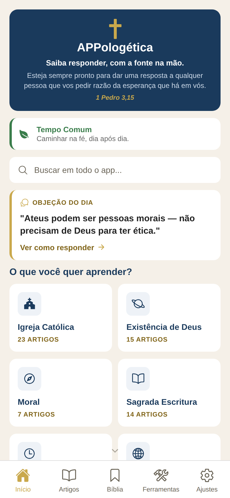
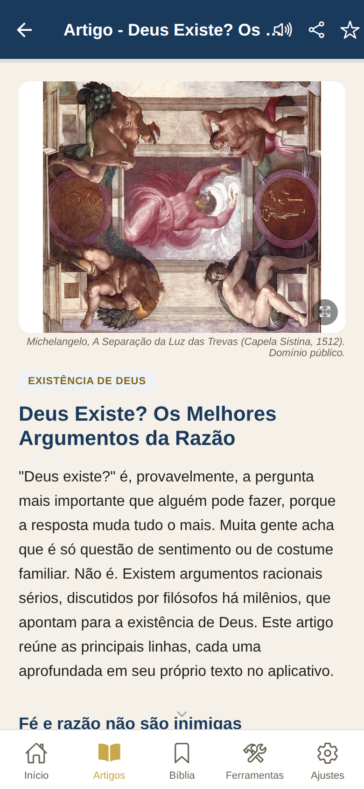
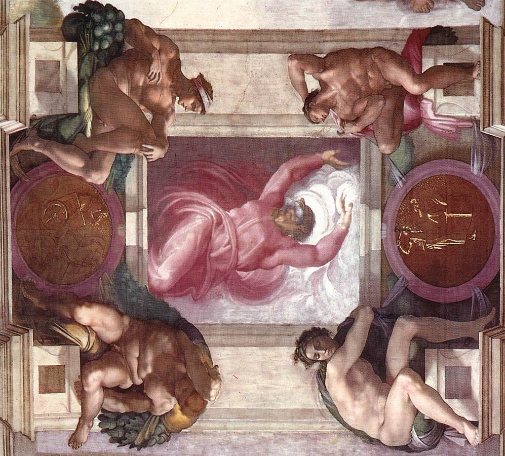
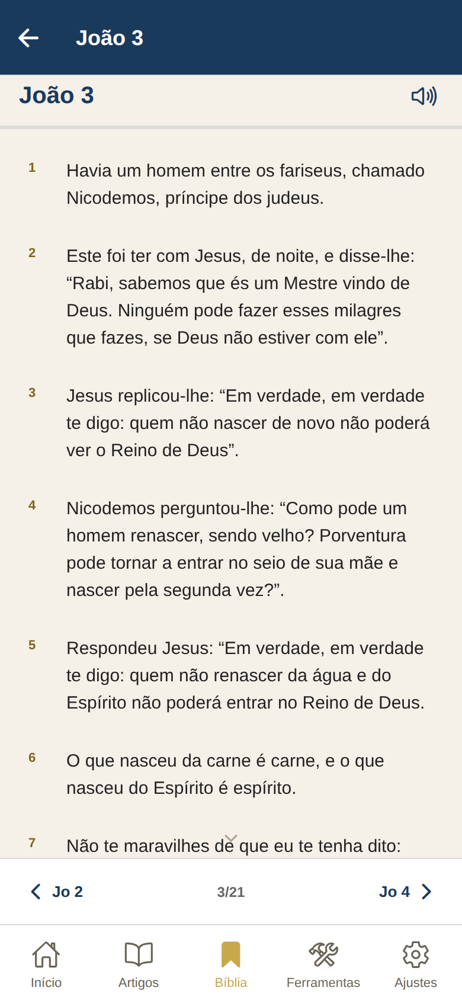
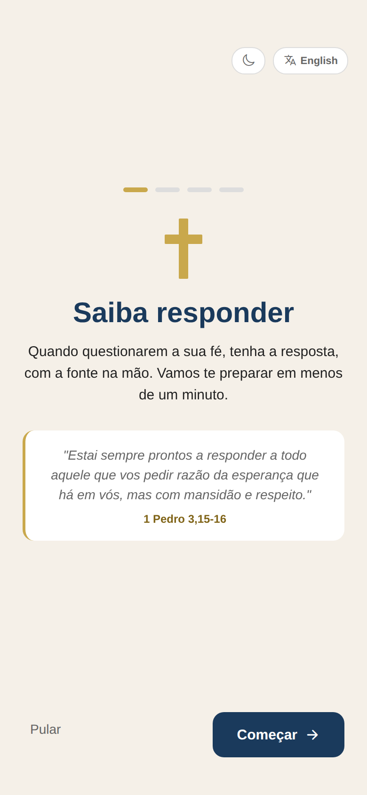
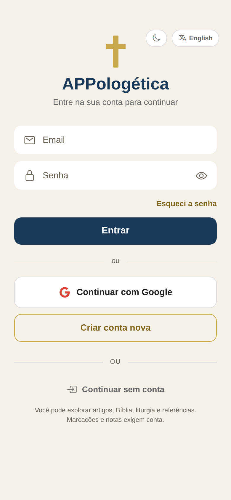
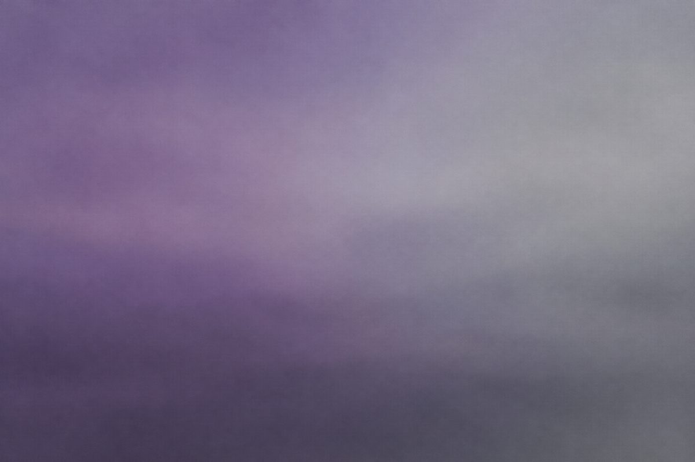

Início
terça-feira, 23 de setembro
Buscar
Objeção do dia
“Ateus podem ser pessoas morais, não precisam de Deus para ter ética.”
Resposta guiada em 6 passos, com fontes
Protótipo da Fase 4. Esquerda: captura real do app hoje. Direita: mock em HTML com os tokens propostos. Role dentro dos aparelhos, toque nos cards e nos versículos: o título encolhe, a tela empurra da direita, o menu sobe como sheet. No aparelho, cada toque desses vem com haptic leve.
O chrome recua: tab bar translúcida com o conteúdo passando por baixo, large title que encolhe e vira barra com blur, sem seta de scroll animada. A objeção do dia é o único elemento que fala alto. As seis caixas de categoria viram uma lista agrupada.

terça-feira, 23 de setembro
Objeção do dia
“Ateus podem ser pessoas morais, não precisam de Deus para ter ética.”
Resposta guiada em 6 passos, com fontes
Alguém te diz
“Ateus podem ser pessoas morais, não precisam de Deus para ter ética.”
Você responde
Concordo: dá para ser bom sem acreditar em Deus. A pergunta é outra. Sem Deus, de onde vem a obrigação de ser bom? Se a moral é só preferência ou acordo social, ela muda com a maioria. Se ela obriga a todos, precisa de um fundamento que não muda.
Toque em “Ver como responder” para ver a transição de tela. Role para ver o título encolher e a tab bar deixar o conteúdo passar por baixo.
Um título só, na página. O header vira translúcido e mostra o nome curto quando o título sai de cena. O corpo em serifa de leitura com medida curta e entrelinha generosa. As fontes citadas viram uma lista agrupada com o mesmo desenho do resto do app.


Michelangelo, A Separação da Luz das Trevas (Capela Sistina, 1512). Domínio público.
Existência de Deus
“Deus existe?” é, provavelmente, a pergunta mais importante que alguém pode fazer, porque a resposta muda tudo o mais. Muita gente acha que é só questão de sentimento ou de costume familiar. Não é. Existem argumentos racionais sérios, discutidos por filósofos há milênios, que apontam para a existência de Deus.
A Igreja sempre ensinou que a razão pode chegar a Deus. O Catecismo diz que, partindo do movimento e do devir, da contingência, da ordem e da beleza do mundo, pode-se chegar ao conhecimento de Deus como origem e fim do universo.
Role o artigo: o nome curto aparece no header quando o título sai. A linha dourada no header é o progresso de leitura.
O capítulo ocupa a tela. O título aparece uma vez, os números de versículo ficam pequenos em dourado, o texto em serifa de leitura. Anterior e próximo viram uma pílula flutuante. Toque simples abre o menu como sheet, com teclado também.

Evangelho segundo João, capítulo 3 de 21
Tradução Ave Maria
Toque num versículo para abrir o menu como sheet. A pílula “Jo 2 · 3 de 21 · Jo 4” flutua sobre o texto e some ao rolar para baixo.
Quieto como o resto do app: fundo creme, um brilho quase imperceptível no topo e a tipografia falando sozinha. Uma promessa que o app cumpre: “Saiba responder”, sem “em menos de um minuto”. O botão “Pular” tem 44 px de altura e a tela só aparece na primeira vez.

Quando questionarem a sua fé, tenha a resposta com a fonte na mão.
“Estai sempre prontos a responder para vossa defesa a todo aquele que vos pedir a razão de vossa esperança, mas fazei-o com suavidade e respeito.”1 Pedro 3,15
Sem imagem de fundo. Os assets de luz da Fase 3 ficam como opção só para o splash, se quiser.
Campos com rótulo, anel de foco visível, um só divisor, e “Continuar sem conta” com o mesmo peso visual das outras opções. O subtítulo não afirma uma obrigação que a tela dispensa.

Sua conta guarda marcações e notas em todos os aparelhos.
Sem conta você lê tudo. Marcações, notas e caderno pedem conta.
Clique num campo para ver o anel de foco. Todos os botões têm 44 px ou mais de altura.
Os valores que o mock usa e que a Fase 5 leva para src/theme/tokens.js. Regra da Apple quando há; escolha nossa quando marcada.
| fundo | #f5f0e8 / #0d1722 | marca |
| superfície | #ffffff / #172538 | marca |
| texto | #222222 / #ece8d8 | marca |
| secundário | #6a6457 / #a8a395 | marca, AA |
| tint | #1a3a5c / #d4b86a | navy no claro, dourado no escuro (escolha nossa) |
| dourado | #c9a84c / #d4b86a | só sobre navy, progresso e números de versículo em #806418 |
| material | fundo a 72% + blur 16 px, saturação 180% | HIG materials, valores calibrados (pesquisa §12.7) |
| Large title | Cormorant 600, 38/40 | HIG 34 pt, +4 pela altura de x da Cormorant (escolha nossa) |
| Título de seção | Cormorant 600, 24/26 | HIG title 2, 22 pt |
| Headline | sistema 600, 17/22 | HIG |
| Body | sistema 400, 17/22 | HIG |
| Subhead | sistema 400, 15/20 | HIG |
| Footnote | sistema 400, 13/18 | HIG |
| Caption | sistema 400, 12/16 e 11/13 | HIG |
| Leitura | Georgia / New York, 18/28 artigo, 19/30 Bíblia | escolha nossa, medida de 58 a 66 caracteres |
| Rótulo de aba | sistema 500, 10,5/13 | HIG 10 pt |
| Grade | 4, 8, 12, 16, 20, 24, 32, 40 | HIG 8 pt com meio passo |
| Margem lateral | 20 | HIG layout margins (iPhone) |
| Raio mínimo | 4 | barra de progresso, marcador (pesquisa §12.3) |
| Raio pequeno | 8 | chips, miniaturas, imagem dentro de card |
| Raio médio | 12 | botões, campos, listas agrupadas (HIG inset grouped 10, +2 escolha nossa) |
| Raio grande | 18 | sheets, imagens, objeção do dia (pesquisa §12.3) |
| Sombra | nenhuma no claro; só sheets e pílulas flutuantes | escolha nossa |
| Alvo mínimo | 44 x 44 | HIG |
| Toque | 150 ms, escala 0,97, volta em spring | interactiveSpring 0,15 s (pesquisa §12.6) |
| Layout | 350 ms, cubic-bezier(.25,.1,.25,1) | easing padrão do Core Animation e 0,35 s do SwiftUI (pesquisa §12.6) |
| Tela (push) | 350 ms, ios_from_right, tela anterior recua 28% | UINavigationController |
| Sheet | 350 ms, spring(damping 0,8) | UISheetPresentationController |
| Reduce motion | crossfade no lugar de deslocamento | HIG accessibility |
| Haptics | leve em seleção, médio em sucesso e long press, nenhum na troca de aba | HIG playing haptics |
